Role
UX Design
Date
Jan 2021 - Mar 2021 (10 weeks)
Team member
Zhen Xu, Jessica Lou, Euphie Zhao
Overview
In this project, we designed a website for a La Jolla local cheese shop - Smallgoods. We were able to design both the desktop and mobile version of the website through a series of research, testing, analysis and prototyping. We started with a initial client survey and user testing to learn about the needs from our clients and users. The final designs were then completed through a series of sketches, wireframes, prototypes and testings.
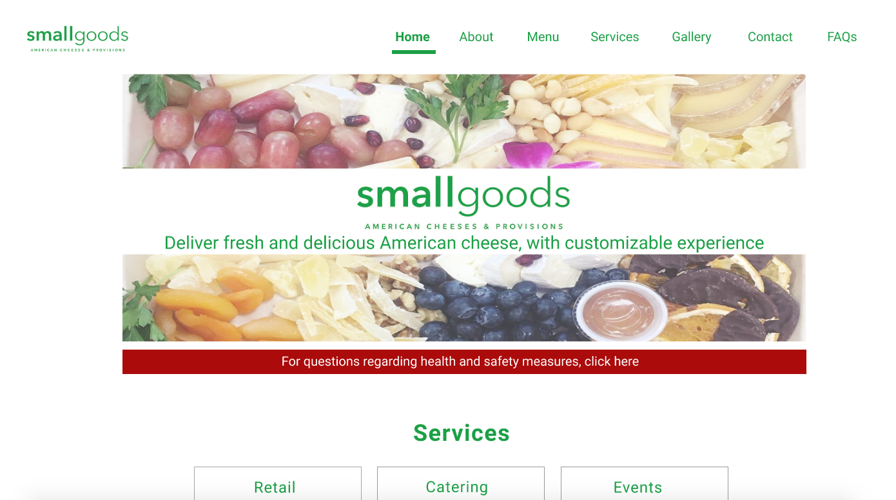 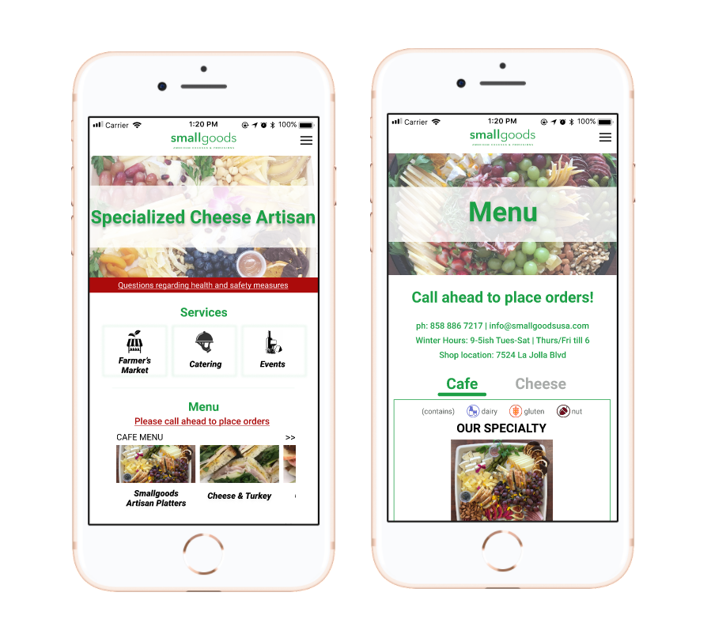Introduction
Smallgoods is a La Jolla, CA Cheese shop & Deli & Cafe that focused on American-made products. Smallgoods specializes exclusively in American farmstead cheeses, cured meats, sliced deli meats and gourmet. The Owner of Smallgoods - Jenny & Mike, started their business in South California in the Fall of 2015. They started in the Farmer's market as a pilot study, and later in Febreary of 2020, they opened the cheese shop&cafe in La Jolla, California. They opened their shop just 4 weeks before COVID and stay-home order happened, they put in a lot effort to stay open during the pandemic and we were hoping to help them by designing a website that is tailored to their shop.
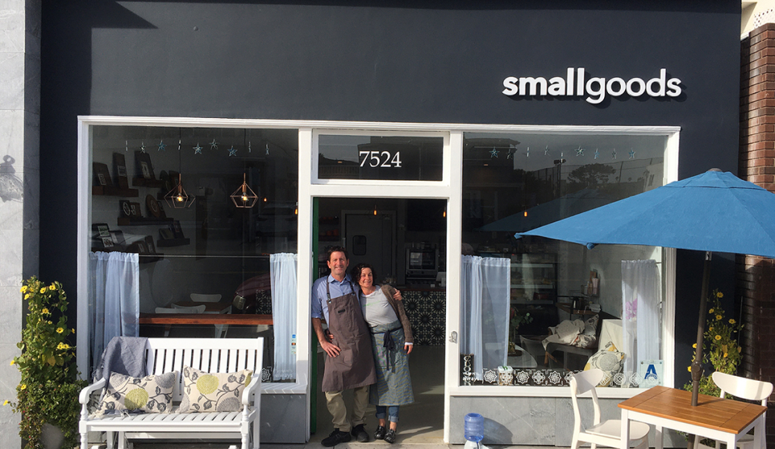Client Survey
We started by conducting a client survey, asking Jenny and Mike questions about the Smallgoods’ business structure, users and their evaluation on their current website and expectation on the new website. After the interview with Jenny and Mike, we were able to determine the basic business model of the startup.The following client survey analysis highlights what Mike and Jenny expect Smallgoods’ website to perform for them as well as their ideal marketing portfolio.
In the survey, we divided our questions into three catrgories: Business structure, Users and Website analysis. Here is a summary and analysis of the client survey
A full list of client survey questions & analysis can be viewed here
-
There are three major competitors Smallgoods has in general. The first one is the grocery store. Mike and Jenny mentioned that when they used to live in NYC, there are many small shops and boutiques and people go to specific shops for specific products. After they moved to San Diego, they found that people basically buy everything from grocery stores. And people tend to buy cheese in grocery stores rather than cheese shops. The second competitor is other cheese shops, and they mentioned there is a famous cheese shop called Venissimo. The third one is other cafes or sandwich shops. Smallgoods also sells sandwiches and other food for a quick lunch. They mentioned that fast food shops, and other sandwich shops can also be their potential competitors.
-
Most of the current customers live in surrounding communities and are 50-60-year-old semi-retired and retired people. Besides, most of the customers are returning customers either from the farmer’s market or their store. In the store, the returning customers take up 50%-60% of the total amount, which is a pretty high percentage showing that the current customers are extremely loyal. Compared with the older generation customers that they have, Smallgoods wants more younger generations to engage in their business. Their ideal primary customers are young people who are willing to spend small amounts of money on their product and enjoy the experience. They want to advertise their product online to attract younger customers since younger generations are more familiar with digital devices.
-
The three main themes that Mike and Jenny are looking for in their website are: Informative, easy to use, and engaging. One thing Mike emphasized is that he wanted the users of their website to know that they need to come to the store to get the product and online orders are not supported at this point. They wanted the website to be informative so that customers can know when, what, and how to reach them. The second theme is easy to use. They hope the customers can navigate and find the information they need quickly without having to wonder where to go. The functions on the website should be efficient. The third one is engaging, Mike and Jenny want their website to be interesting and contain information not only about products and services, but also include information and stories about the shop.
After analyzing the client survey, we made a priority list of what should be our top focuses.
-
Emphasis on American made products
-
Keep the original website logo with its color scheme and similar typography
-
The website should be informative, easy to use, and engaging
-
Include clear and noticeable general information(Location, Hours, Contacts)
-
Product first along with high-quality pictures, condensed in text.
-
Include product page, and live Instagram feed.
User Interviews
From the client interview, the stakeholders had given us a starting point regarding their loyal customers are mostly at retirement age in the store’s neighborhood and those who had purchased products from their farmer market’s pilot experiment. These loyal customers are less likely to be visiting Smallgoods website because they had already established a relationship with Smallgoods. Based on the answers of the 9 users we interviewed, we came up with three personae groups are who either love cheese, willfulness to spend money, or seek cafe experience.
A full list of user interview questions & analysis can be viewed here
User Personae
After analyzing the user interviews, we were able to identify three personae of users for Smallgoods. Spender: people are willing to spend money on cheese, Refined cafe seeker: people who have specific tastes of cafes, Cheese lover: people who love cheese.
Spender
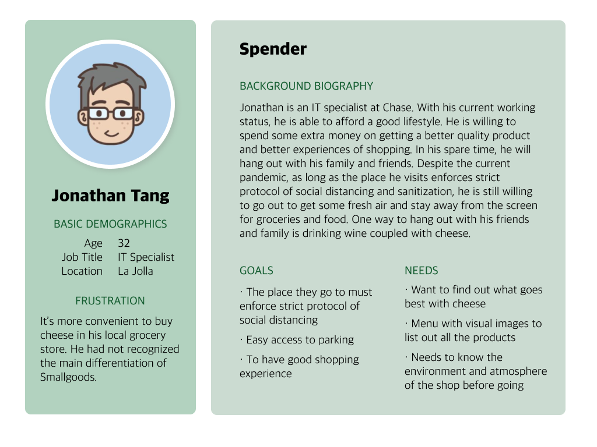Refined cafe seeker
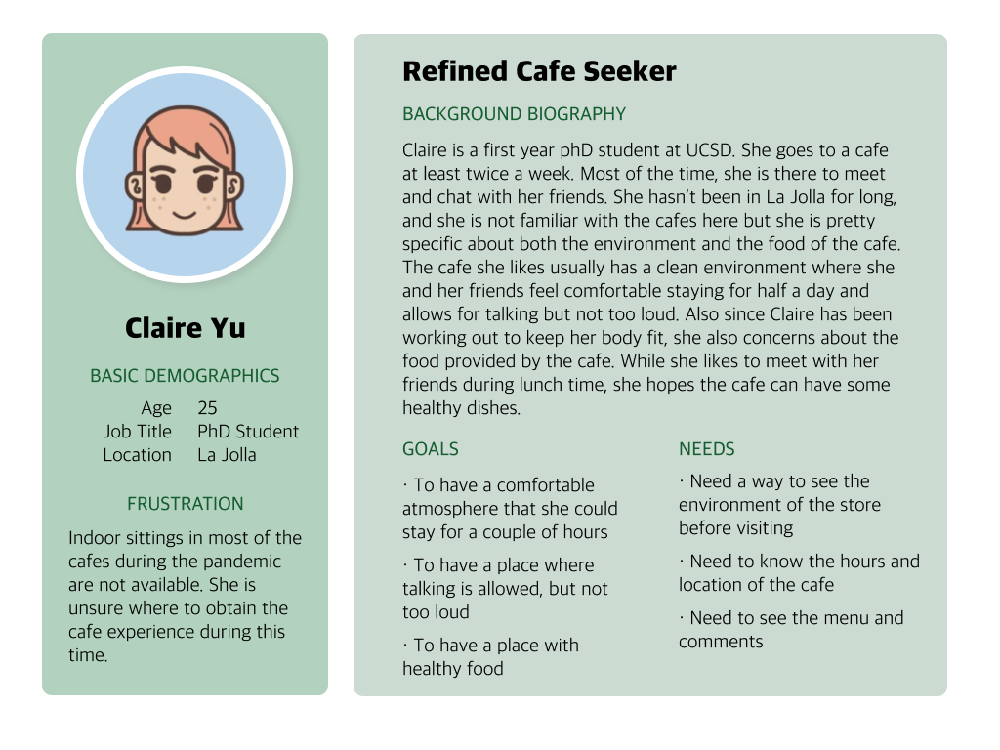Cheese lover
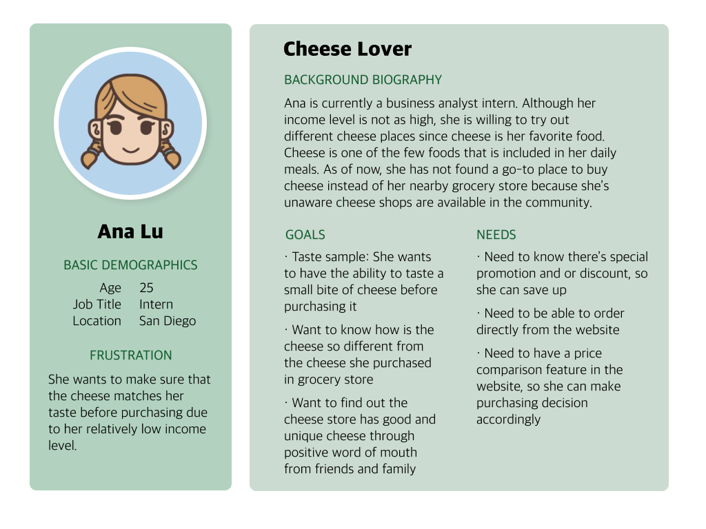Competitive Analysis
As a cheese cafe place, few features must be present in Smallgoods’ website. We choose 5 competitors of Smallgoods: Cheese Shop La Jolla Shores, Fish Shop, Grater Grilled Cheese, The Cheese Shop Inc., and iGourmet. These competitors shared many similarities and there are also unique functions presented in each.
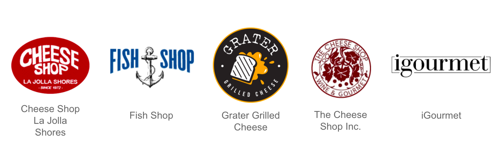We examined the branding, functionality, site architecture, navigation, and content for each competitor and provide some “good design ideas” with possible elements we may consider using for future design.
A full competitive analysis report can be viewed here
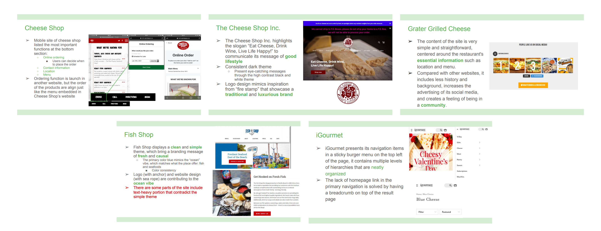Key takeways
-
Color schemes is important in expressing a shop’s brand
-
Having featured pictures combined with a slogan can be effective in showing the brand of a store (Examples: Grater Grilled Cheese, The Cheese shop Inc, Fish Shop)
-
Picture tells more than text - about the brand (Text can be hard to read on mobile screen - Grater Grilled Cheese)
-
Provide links to social media platforms
From the competitive analysis, we were able to generate some ideas for designing webiste for Smallgoods
-
Gallery includes pictures of both the food and the environment of the shop Pictures are consistent with the brand of the shop Let users know what the shop look like and what they can order Allow a good initial impression of the shop Given users an idea of what the experience will be like
-
Providing social media links and showing pictures from the platform is a good way to connect with users Easier for users to see, rather than having the icons in the corner of the page.
-
Show signature products on the homepage. It would be helpful for the first-time users.
-
High-quality poster can be a really good way of promoting. Users can get stronger visual perception from both text and image.
Moodboard
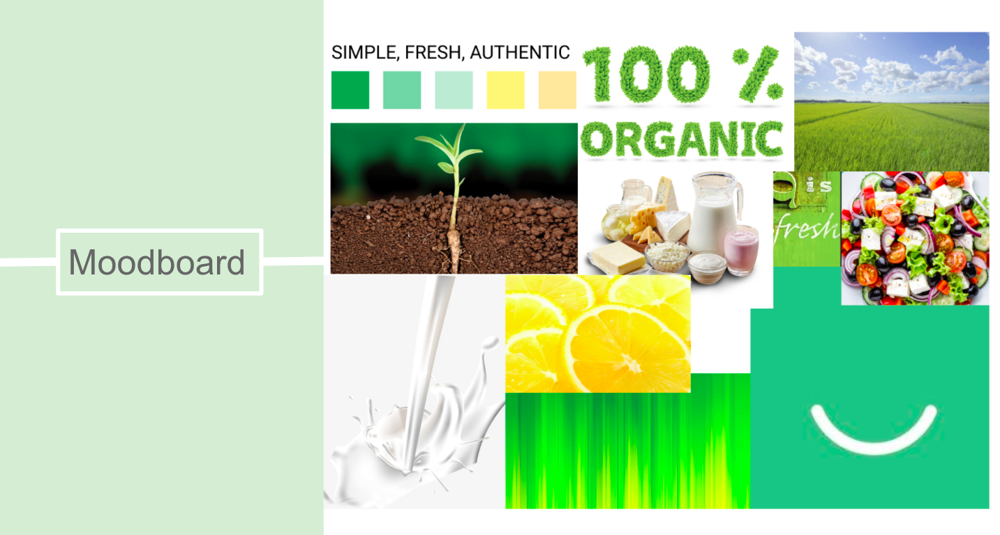Wireframes
Wireframes can be really helpful in laying out the functionalities and contents needed on the site. Before prototyping, we first created a site map, organzing the navigation and contents of the site, then we designed the wireframes to have an idea of what the site navigation should look like.
Site map
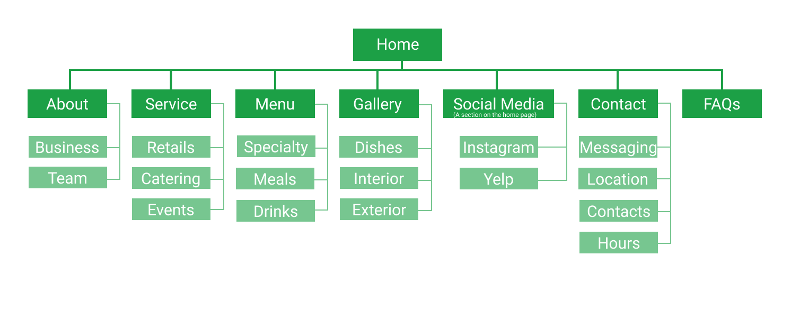Wireframes
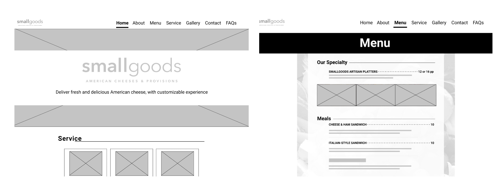 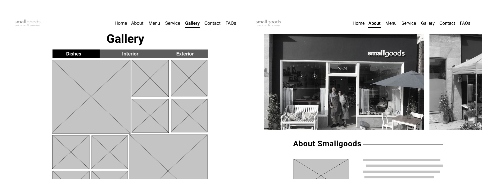 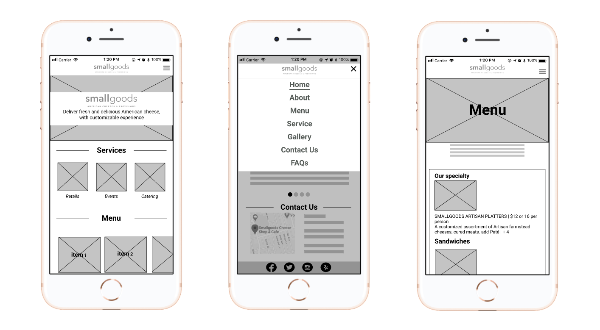 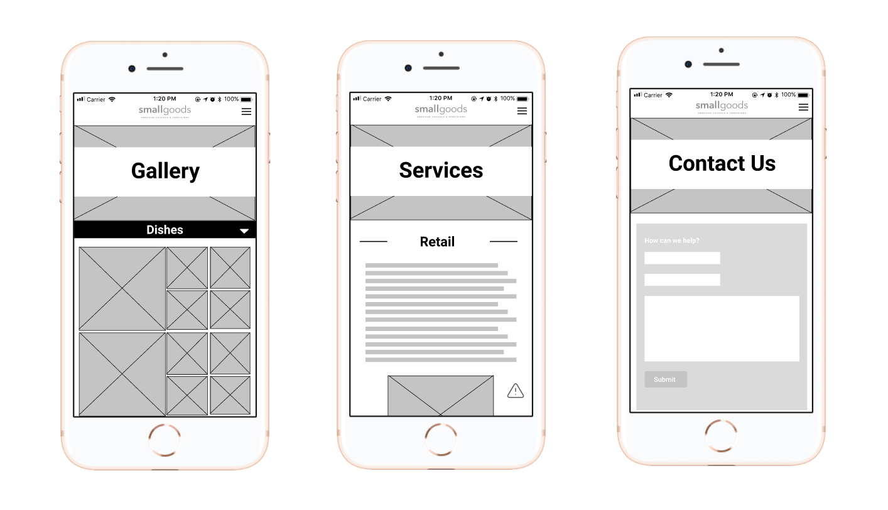Testing
After wireframes, we started a series of iterative prototypes where we conducted user testings after each prototype and solve the problems identified from the testings, repeatedly.
Testings
From this round of user testing, the problems found are mostly about the accessibility of information. We tested the final prototype with 3 users and a problem that was brought up by two users was that they didn’t know how to order cheese using the website. They were expecting an online order service from the website, but did not find one. Smallgoods does not have an online ordering service and from the testing, we realized that we did not make this clear on the website. To improve on this, we made changes to the homepage by adding a phrase that tells users to “call ahead to make orders” in the menu section. The goal is that users will know the website currently does not support online ordering. Another problem we found from the user testing was that users had problems finding the shop’s covid-related policies and guidelines. We put this section in the FAQs page, which was ignored by users. To make this information more accessible, we added a small section on the homepage that links users to FAQs for safety measures related questions.
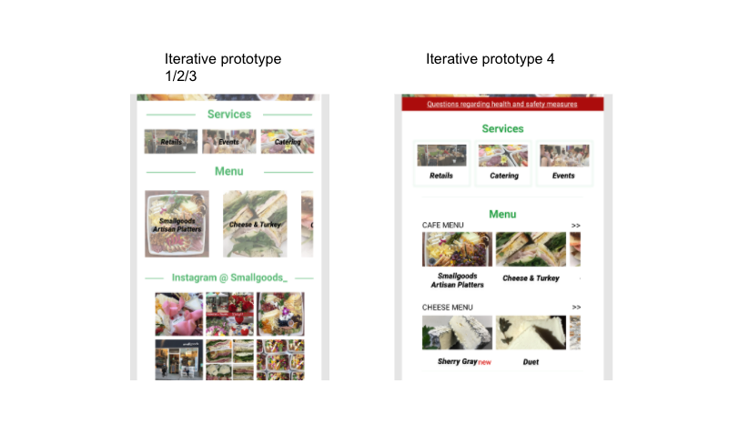
Final prototypes
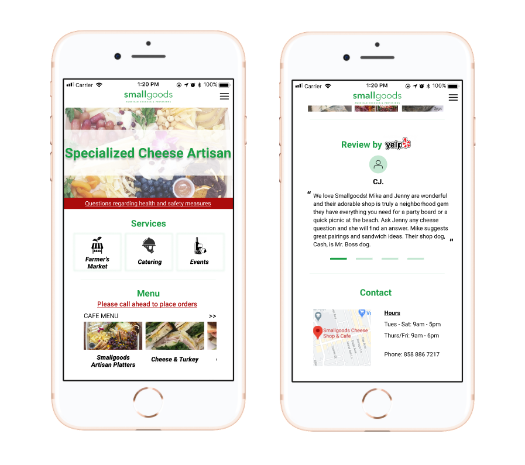 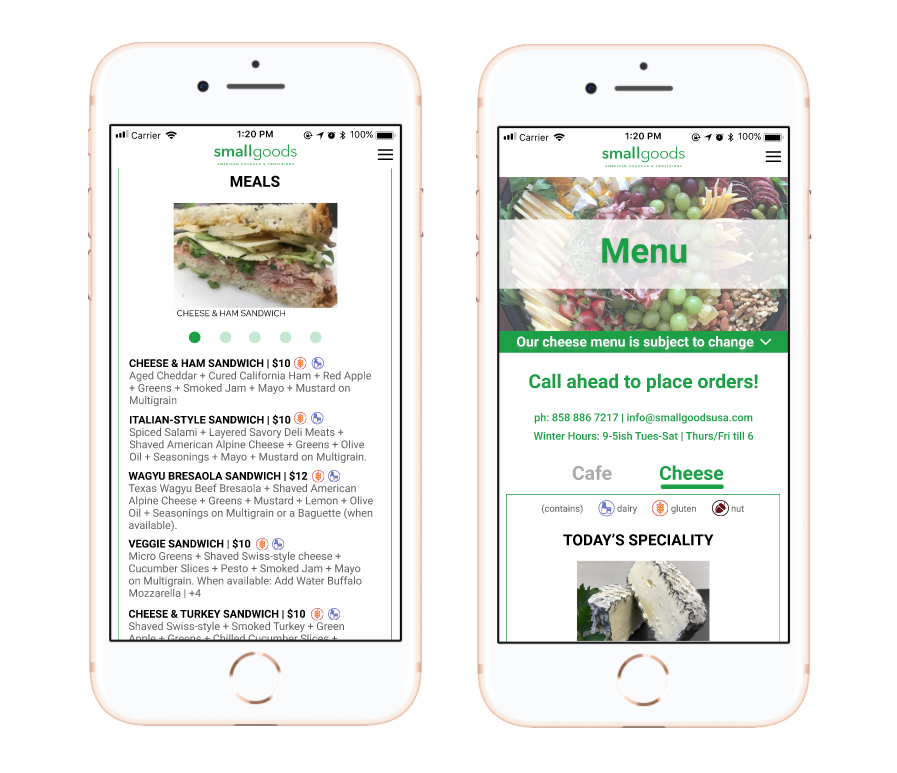 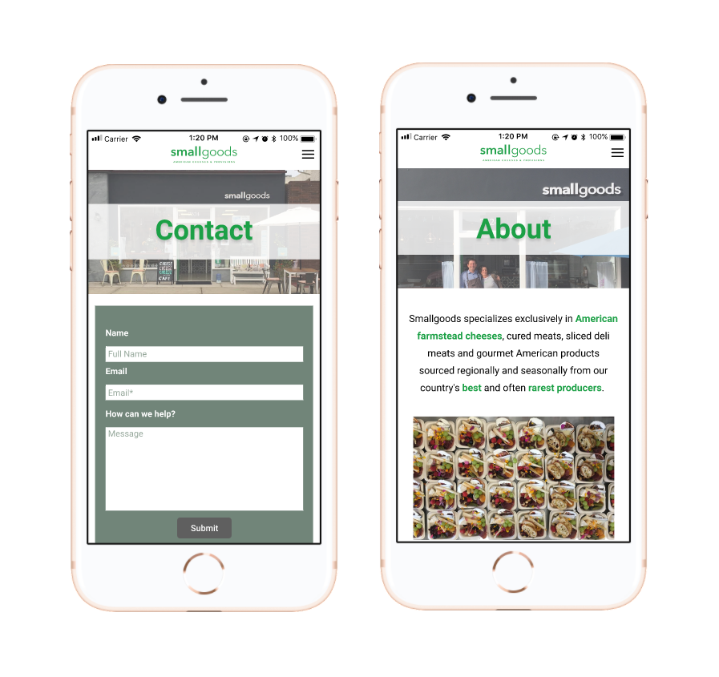